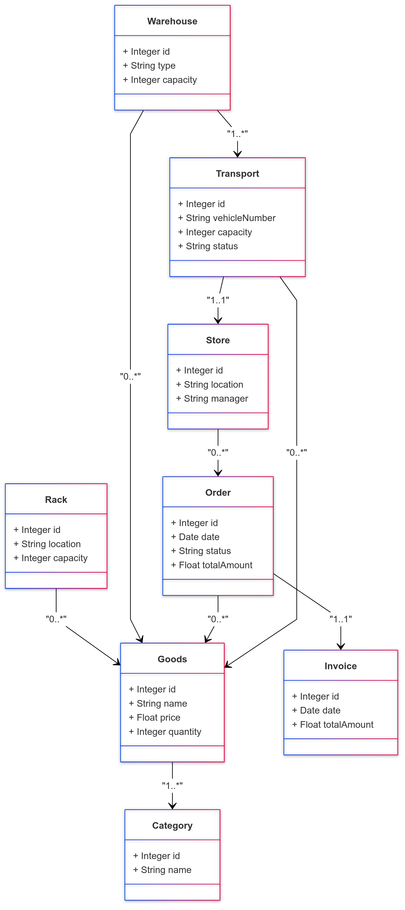

Task 1: Create Model for "Grocery Store"
UML Class Diagram
Key Entities:
-
Goods
- Attributes: id, name, price, quantity
- Relationships: Linked to Category, located on Racks, stored in Warehouses
-
Category
- Attributes: id, name
- Relationships: Contains multiple Goods
-
Rack
- Attributes: id, location, capacity
- Relationships: Holds multiple Goods
-
Warehouse
- Attributes: id, type (central/local), capacity
- Relationships: Stores multiple Goods, Supplies Goods to Stores
-
Store
- Attributes: id, location, manager
- Relationships: Places Orders, Receives Goods from Warehouse, Issues Invoices
-
Order
- Attributes: id, date, status, totalAmount
- Relationships: Links Store and Goods
-
Invoice
- Attributes: id, date, totalAmount
- Relationships: Generated for an Order
-
Transport
- Attributes: id, vehicleNumber, capacity, status
- Relationships: Connects Warehouse, Store, and Goods
Relationships:
- Binary:
- Goods belong to a Category (1..*).
- Racks hold Goods (0..*).
- Warehouses store Goods (0..*).
- Ternary:
- Transport links Warehouse, Store, and Goods.
Sequence Diagram
The sequence diagram describes the process of a store placing an order and receiving goods:

Actors: Store Manager, Warehouse Manager, Transport Coordinator
Steps:
- Store Manager places an order.
- The order is sent to the Warehouse.
- Warehouse Manager prepares the Goods.
- Transport Coordinator schedules the delivery.
- Goods are delivered to the Store.
- Store Manager acknowledges receipt.
- Invoice is generated for the order.
Activity Diagram
The activity diagram describes the flow of goods from the central warehouse to a local store:

Steps:
- Goods are requested by the store.
- The warehouse checks stock availability.
- If goods are available:
- Goods are prepared for transport.
- Transport is assigned to deliver goods.
- If goods are unavailable:
- The order is flagged for backorder.
- Goods are delivered to the store.
- Store confirms receipt of goods.
OCL Constraints
- Invariant: Rack Capacity
context Rack inv: self.goods->size() <= self.capacity- Ensures that the number of goods on a rack does not exceed its defined capacity.
- Invariant: Warehouse Stock
context Warehouse inv: self.goods->forAll(g | g.quantity >= 0)- Ensures all goods stored in the warehouse have non-negative quantities.
- Pre-condition and Post-condition: Order Creation
context Order::createOrder() pre: self.goods->notEmpty() and self.totalAmount > 0 post: self.status = 'Created'- Pre-condition: Checks that an order is meaningful (contains goods and has a positive total amount).
- Post-condition: Sets the order status to 'Created' after successful creation.
- Pre-condition and Post-condition: Transport Assignment
context Transport::assign() pre: self.status = 'Available' post: self.status = 'Assigned'- Pre-condition: Ensures transport is available before assignment.
- Post-condition: Updates the status to 'Assigned' after the transport is allocated.
Task 2: Document Your Solution
Key Design Decisions
- Entity Selection: Focused on core components like goods, racks, warehouses, and transport to maintain clarity and relevance.
- Relationships: Used binary and ternary relationships to effectively represent real-world interactions.
- Abstraction Level: Avoided excessive detail (e.g., specific vehicle routing or employee shifts).
- OCL Constraints: Added constraints to ensure data integrity and logical consistency.
Task 3: Evaluation of the Solution
1. Level of Abstraction
- Ignored Details: Customer interaction, product returns, shelf arrangements.
- Appropriate Abstraction: Focused on the supply chain and inventory processes.
2. Level of Approximation
- Under-specification: Some operational details, like scheduling, are not modeled.
- Over-specification: Relationships and constraints are adequately defined without being overly restrictive.
3. Ambiguity vs. Precision
- Strengths: Clear multiplicities and constraints reduce ambiguity.
- Weaknesses: Certain real-world exceptions (e.g., delayed transport) are not captured.
4. Completeness
- The model adequately covers ordering, storage, and delivery processes but does not include rare scenarios like damaged goods or emergency orders.
Task 4: Opinion on Modeling Language, Tools, and Methodology
Effectiveness of UML and OCL
-
Strengths:
- Provides a structured, visual representation of complex systems.
- Facilitates alignment among stakeholders during design.
- OCL ensures logical correctness and data integrity.
-
Weaknesses:
- High learning curve for OCL.
- Maintaining detailed diagrams for large systems can be time-consuming.
Practical Usage Scenarios
- System Design: Essential for designing ERP or supply chain management systems.
- Requirement Validation: Useful for validating and maintaining consistency in requirements.
- Documentation: Suitable for industries requiring precise documentation (e.g., healthcare, finance).
Does it make sense to use detailed UML diagrams in practice?
- Yes: For large, complex systems where precision and consistency are critical.
- No: For small or agile projects where simpler, informal diagrams are sufficient.